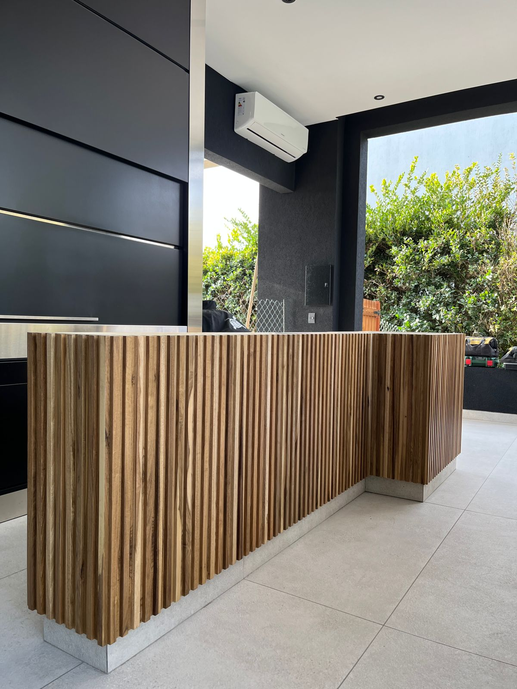
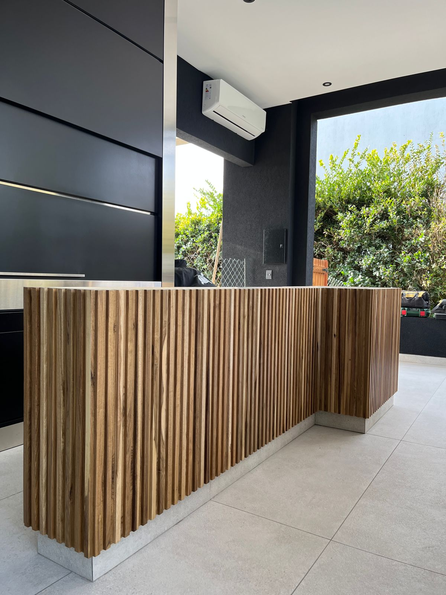

Aquí nace tu sueño
En Zanino Amoblamientos encontrarás muebles fabricados a medida y a tu gusto, tendrás variedades de diseños, colores y trabajos de primera calidad.
Tendrás una gama muy variada de colores y texturas, eligí a tu gusto y dejá que nuestros carpinteros hagan realidad tu deseo.

 
